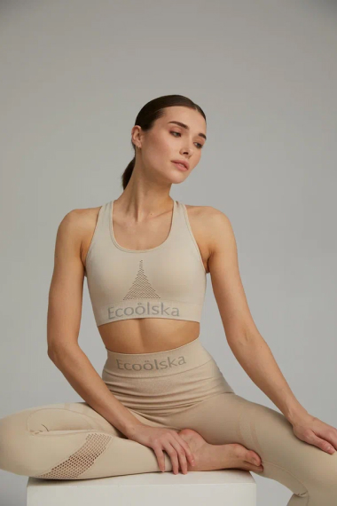
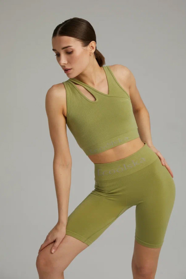
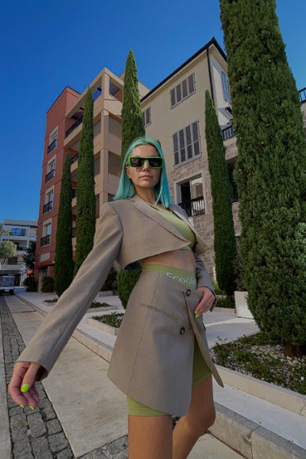
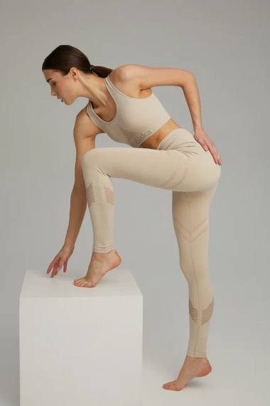
 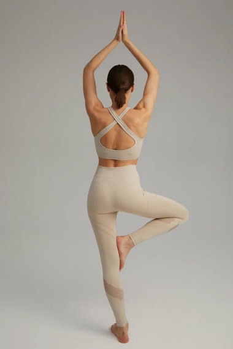
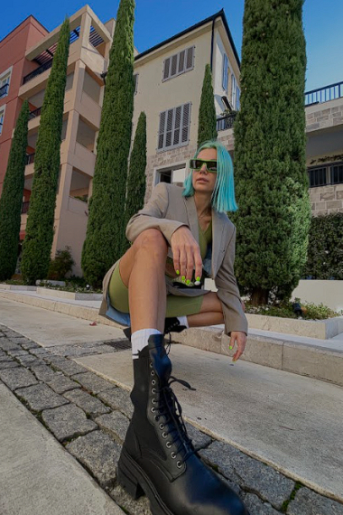
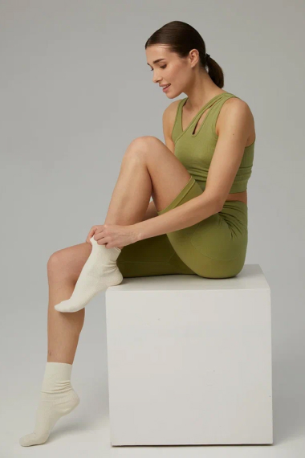
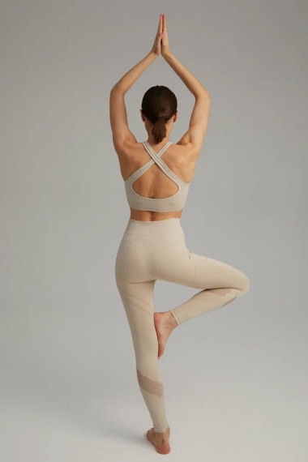
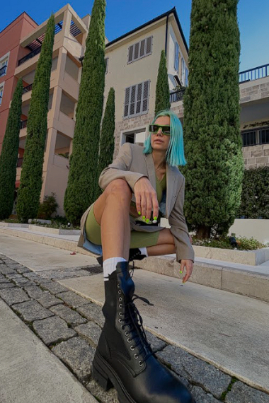
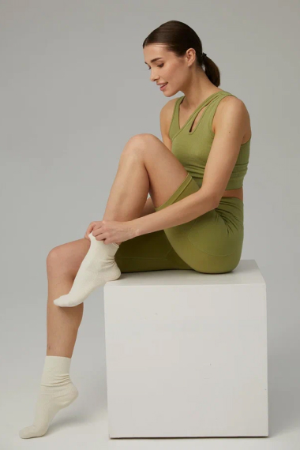
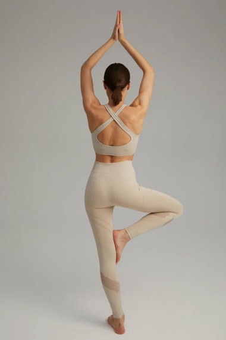
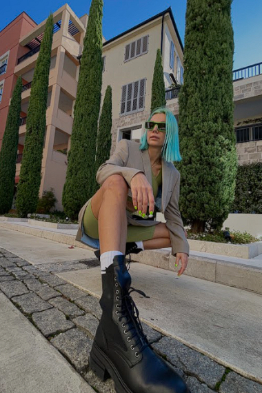
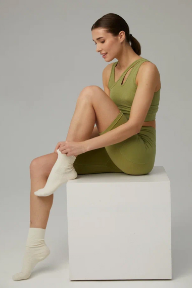
A new collection
Sustainable
athleisure
made of
eco-certified fabrics.
Experience the ultra-soft seamless activewear made from LYOCELL and AMNI SOUL ECO by LENZINGTM. We use only sustainable and biodegradable fabrics in order to take care of your comfort and sustainable future of the planet.
In addition to the ecological and sustainable properties, our suits offer: softness, comfort, dyeing quality, breathability and easy care.
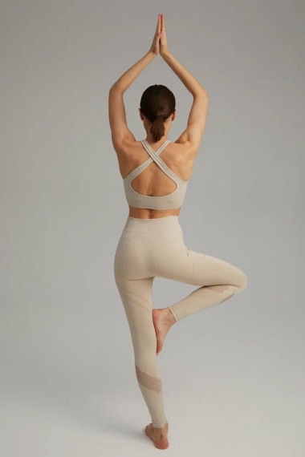
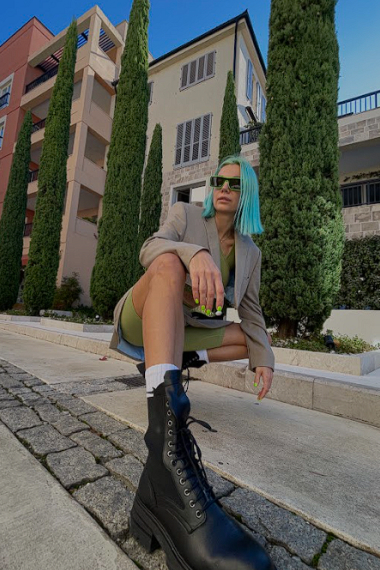
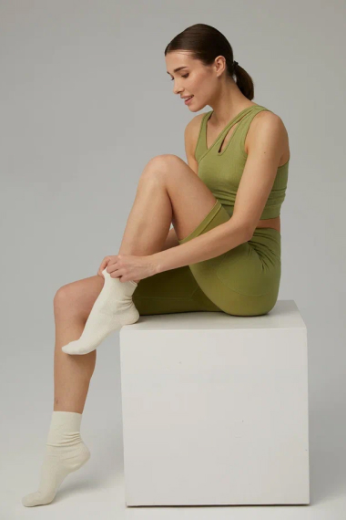
Suites from the collection «Sustainable seamless activewear» are made
from TENCEL TM LYOCELL and AMNI SOUL ECO (97%)
Composition:
Lyocell (83%), Recycled Polyester (12%) and Elastane (5%)
Lenzing fibers are made of cellulose, the core component of all plants on earth, more than 99 percent of the wood comes from sustainable forestry. It is certified or controlled according to FSC®️ and PEFCTM.
LENZINGTM Lyocell fiber is known for it's natural comfort and environmentally responsible production process. It delivers quality, performance and versatility.
Unique physical properties lead to their high tenacity profile, moisture management and gentleness on skin. This fiber has been certified as compostable and biodegradable under industrial, home, soil and marine conditions, thus it can fully revert back to nature.
Amni Soul Eco®️ technology is part of a new generation of sustainable yarns coming from a process that respects the environment. This care for the planet is present in the reuse of water used in its manufacturing process and in the reduction of greenhouse gases, which are treated prior to being released into the environment, thus preserving the ozone layer and nature.
Amni Soul Eco®️ is eliminated from the planet in about 5 years, whilst other fibres take decades to decompose. Like other biodegradable products, once it is in the landfill, Amni Soul Eco®️, breaks down into organic matter (biomass) and biogas; both of these can then be exploited as new environmental resources as well as being used to cogenerate electricity.
Composition:
AMNI SOUL ECO (97%), Elastane (3%).
{kind=link}
{kind=link}
{kind=link}
{kind=link}